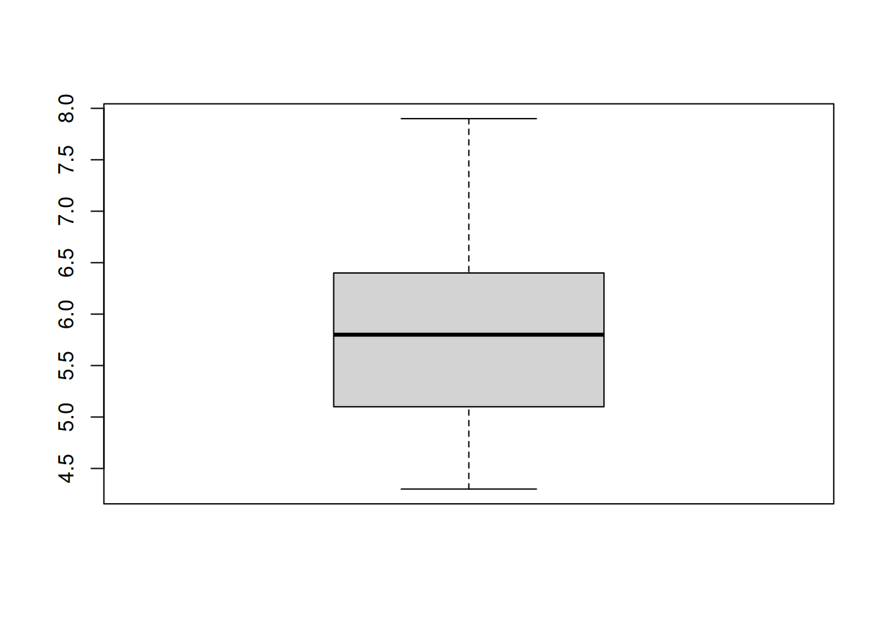
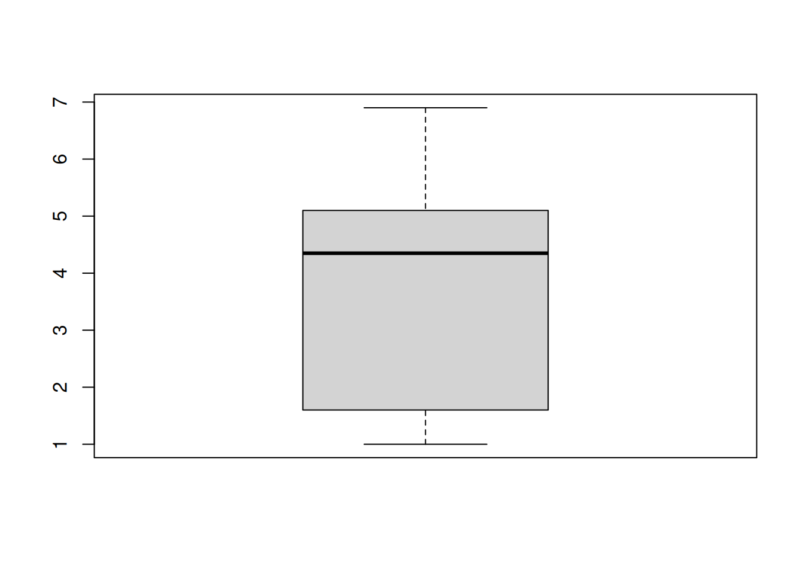
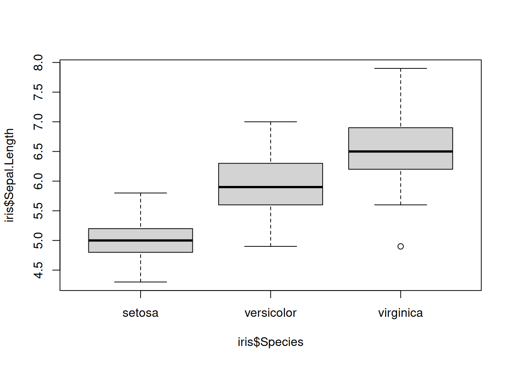
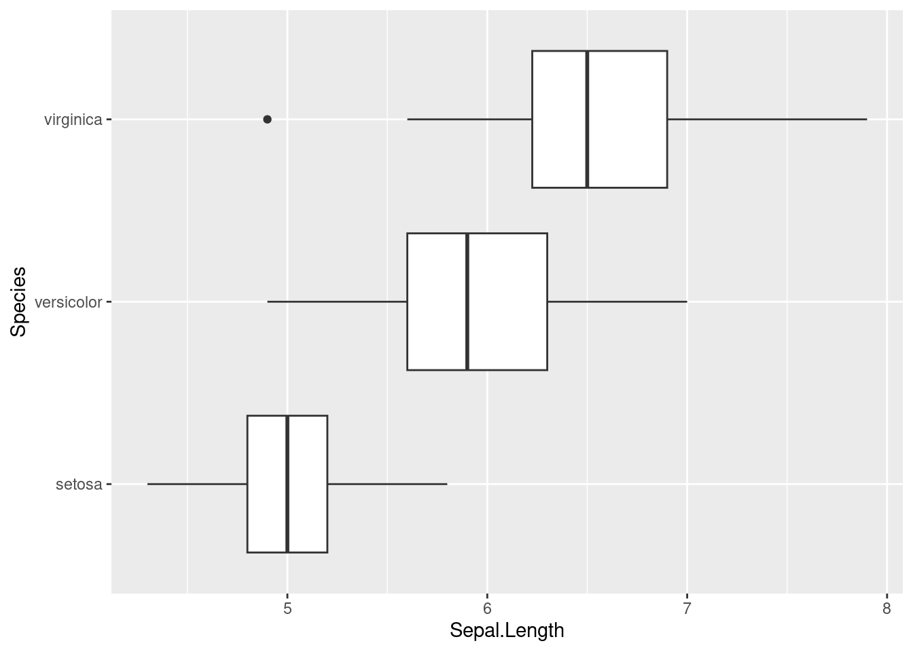

colnames(iris)[1] "Sepal.Length" "Sepal.Width" "Petal.Length" "Petal.Width" "Species" Bu noktaya kadar R üzerinde veri tiplerini, vektörleri, listeler, ve veri çerçevelerini öğrendik. Hatta, bilgisayardaki verileri okuduk. Bu sayede basit vektörel işlemler yaptık. Mesela boyu belirli bir değerden büyük olan kişileri seçtik. Ya da boy ve kilo değişkenlerini kullanarak vücut kütle endeksi bile hesapladık. Peki bundan sonra ne olacak?
Veri analizi aslında bilimsel bir hikaye anlatıcılığıdır. Nasıl bir hikaye anlatıcısı üslubuyla, benzetmeleriyle, kelime oyunlarıyla bize bir öykü anlatıyorsa; biz de tablolarımızla, grafiklerimizle, ve istatsisitk bilgimizle okuyuculara bilimsel bir öykü anlatıyoruz. Bu öykü anlatıcılığındaki ilk adım ise, elimizdeki verinin ne olduğunu tanımlamak. İşte bunu tanımlayıcı istatistik olarak isimlendiriyoruz.
Öncelikle, R üzerinde gelen öntanımlı iris veri setini kullanarak işe başlayalım.
Bu veri çerçevesinin sütun isimlerini elde edelim:
colnames(iris)[1] "Sepal.Length" "Sepal.Width" "Petal.Length" "Petal.Width" "Species" Bu veri seti, iris biktisinin üç farklı türüne ait sepal uzunluğu, sepal genişliği, petal uzunluğu, petal genişliği ve tür isimleri gibi farklı değişkenleri barındıryor.
Bu adımdan sonra kullanacağımız ilk fonksiyon summary olacak. Bir dosya okuduktan sonra her zaman bu fonksiyonla elde ettiğiniz veri çerçevesini özetlemenizi tavsiye ederim. Bu sayede elinizdeki verinin içeriğini öğrenmiş olacaksınız:
summary(iris) Sepal.Length Sepal.Width Petal.Length Petal.Width
Min. :4.300 Min. :2.000 Min. :1.000 Min. :0.100
1st Qu.:5.100 1st Qu.:2.800 1st Qu.:1.600 1st Qu.:0.300
Median :5.800 Median :3.000 Median :4.350 Median :1.300
Mean :5.843 Mean :3.057 Mean :3.758 Mean :1.199
3rd Qu.:6.400 3rd Qu.:3.300 3rd Qu.:5.100 3rd Qu.:1.800
Max. :7.900 Max. :4.400 Max. :6.900 Max. :2.500
Species
setosa :50
versicolor:50
virginica :50
Bu komut sonucunda, her sütuna ait farklı istatistik bilgiler elde ettik.
Peki bundan sonra ne olacak? Bu verilerle ne yapabiliriz?
Sıra sıra gidelim…
Tanımlayıcı istatistikler, genel olarak bir verideye üstten bir bakış atmamızı sağlar. Aslında bu veri içerisindeki ilişkileri, çıkarımsal olmayan bir şekilde görselleştirmeyi hedefliyoruz.
Veri çerçevesinde kaç eleman var?
Ya da vektörlerin boyutlarını hesaplayabiliriz:
length(iris$Sepal.Length)[1] 150Mesela bu veri çerçevesindeki tür isimleri için frekans tablosu oluşturalım. Bunun için table fonksiyonunu kullanacağız:
table(iris$Species)
setosa versicolor virginica
50 50 50 Peki şimdi rakam vektörlerinde kullanalım:
table(iris$Sepal.Length)
4.3 4.4 4.5 4.6 4.7 4.8 4.9 5 5.1 5.2 5.3 5.4 5.5 5.6 5.7 5.8 5.9 6 6.1 6.2
1 3 1 4 2 5 6 10 9 4 1 6 7 6 8 7 3 6 6 4
6.3 6.4 6.5 6.6 6.7 6.8 6.9 7 7.1 7.2 7.3 7.4 7.6 7.7 7.9
9 7 5 2 8 3 4 1 1 3 1 1 1 4 1 Sanırım bu fonkisyon rakam vektörleri için kullanışlı değil. Rakam vektörleri için ayrı bir sistem gerek. Peki bu vektörü nasıl ifade edebiliriz?
İlk seçeneğimiz aritmetik ortalama hesaplamak:
mean(iris$Sepal.Length)[1] 5.843333İkinci seçeneğimiz ortanca değeri hesaplamak:
median(iris$Sepal.Length)[1] 5.8Ortanca ve ortalama iki farklı istatistik aslında. Aritmetik ortalama, örneklem boyutuna bağlıdır. Bir \(x\) vektörünün aritmetik ortalaması ($ $), aşağıdaki gibi hesaplanabilir:
\[ \overline{x} = \frac{\sum_{i=i}^{n} x_{i}}{n} \]
Ortanca değer ise, bir vektörü küçükten büyüğe doğru sıraladığınzda, en ortada elde edilen değerdir. Elemanların yarısı bu değerin altında, diğer yarısı ise bu değerin üzerinde bulunur.
Peki, verimizin sınırları ne? Bunun için tekrar summary fonksiyonuna bakalım:
summary(iris$Sepal.Length) Min. 1st Qu. Median Mean 3rd Qu. Max.
4.300 5.100 5.800 5.843 6.400 7.900 Elde ettiğimiz ilk değer, en küçük elemanı gösteriyor. En sonraki değer ise en büyük elemanı. Aynı zamanda bu şekilde de hesaplayabiliriz:
Aynı zamanda ortanca (median), ve aritmetik ortalama (mean) değerleri de hesaplanmış. Peki, 1st Qu. ve 3rd Qu. nedir?
Bu değerler çeyreklik olarak isimlendirilir. Elimizdeki veriyi, her bir parça toplam rakamların %25’ini içerecek şekilde 4 parçaya böldüğümüzde, elde ettiğimiz her bölge çeyreklik olarak isimlendirilir. Bu değerleri daha iyi anlamak için quantile fonksiyonunu kullanalım:
quantile(iris$Sepal.Length) 0% 25% 50% 75% 100%
4.3 5.1 5.8 6.4 7.9 0% aslında en küçük değeri, 100% ise en büyük değeri gösteriyor. 4.3’ e kadar ilk çeyreklik kısım, 5.1’ye kadar ikinci çeyreklik, 6.4’e kadar üçüncü çeyreklik ve 7.9’ya kadar ise son çeyreklik kısım bulunur. İsterseniz rakamları sıralamamızı sağlayan sort fonksiyonu ile daha rahat görebiliriz:
sort(iris$Sepal.Length) [1] 4.3 4.4 4.4 4.4 4.5 4.6 4.6 4.6 4.6 4.7 4.7 4.8 4.8 4.8 4.8 4.8 4.9 4.9
[19] 4.9 4.9 4.9 4.9 5.0 5.0 5.0 5.0 5.0 5.0 5.0 5.0 5.0 5.0 5.1 5.1 5.1 5.1
[37] 5.1 5.1 5.1 5.1 5.1 5.2 5.2 5.2 5.2 5.3 5.4 5.4 5.4 5.4 5.4 5.4 5.5 5.5
[55] 5.5 5.5 5.5 5.5 5.5 5.6 5.6 5.6 5.6 5.6 5.6 5.7 5.7 5.7 5.7 5.7 5.7 5.7
[73] 5.7 5.8 5.8 5.8 5.8 5.8 5.8 5.8 5.9 5.9 5.9 6.0 6.0 6.0 6.0 6.0 6.0 6.1
[91] 6.1 6.1 6.1 6.1 6.1 6.2 6.2 6.2 6.2 6.3 6.3 6.3 6.3 6.3 6.3 6.3 6.3 6.3
[109] 6.4 6.4 6.4 6.4 6.4 6.4 6.4 6.5 6.5 6.5 6.5 6.5 6.6 6.6 6.7 6.7 6.7 6.7
[127] 6.7 6.7 6.7 6.7 6.8 6.8 6.8 6.9 6.9 6.9 6.9 7.0 7.1 7.2 7.2 7.2 7.3 7.4
[145] 7.6 7.7 7.7 7.7 7.7 7.9Tam olmasa da, yaklaşık olarak eşit sayıda gruplar olduğu görülmekte.
Son olarak cut isimli fonksiyonlar benzer bir çalışma yapabiliriz. Bu fonksiyon, elimizdeki bir rakam vektörünü, istediğimiz aralıklarla bölmemizi sağlar. Mesela Sepal.Length vektörünü, en küçük elemanı koruyacak şekilde 4 parçaya ayıralım:
cut(iris$Sepal.Length, 4, include.lowest = TRUE) [1] [4.3,5.2] [4.3,5.2] [4.3,5.2] [4.3,5.2] [4.3,5.2] (5.2,6.1] [4.3,5.2]
[8] [4.3,5.2] [4.3,5.2] [4.3,5.2] (5.2,6.1] [4.3,5.2] [4.3,5.2] [4.3,5.2]
[15] (5.2,6.1] (5.2,6.1] (5.2,6.1] [4.3,5.2] (5.2,6.1] [4.3,5.2] (5.2,6.1]
[22] [4.3,5.2] [4.3,5.2] [4.3,5.2] [4.3,5.2] [4.3,5.2] [4.3,5.2] [4.3,5.2]
[29] [4.3,5.2] [4.3,5.2] [4.3,5.2] (5.2,6.1] [4.3,5.2] (5.2,6.1] [4.3,5.2]
[36] [4.3,5.2] (5.2,6.1] [4.3,5.2] [4.3,5.2] [4.3,5.2] [4.3,5.2] [4.3,5.2]
[43] [4.3,5.2] [4.3,5.2] [4.3,5.2] [4.3,5.2] [4.3,5.2] [4.3,5.2] (5.2,6.1]
[50] [4.3,5.2] (6.1,7] (6.1,7] (6.1,7] (5.2,6.1] (6.1,7] (5.2,6.1]
[57] (6.1,7] [4.3,5.2] (6.1,7] [4.3,5.2] [4.3,5.2] (5.2,6.1] (5.2,6.1]
[64] (5.2,6.1] (5.2,6.1] (6.1,7] (5.2,6.1] (5.2,6.1] (6.1,7] (5.2,6.1]
[71] (5.2,6.1] (5.2,6.1] (6.1,7] (5.2,6.1] (6.1,7] (6.1,7] (6.1,7]
[78] (6.1,7] (5.2,6.1] (5.2,6.1] (5.2,6.1] (5.2,6.1] (5.2,6.1] (5.2,6.1]
[85] (5.2,6.1] (5.2,6.1] (6.1,7] (6.1,7] (5.2,6.1] (5.2,6.1] (5.2,6.1]
[92] (5.2,6.1] (5.2,6.1] [4.3,5.2] (5.2,6.1] (5.2,6.1] (5.2,6.1] (6.1,7]
[99] [4.3,5.2] (5.2,6.1] (6.1,7] (5.2,6.1] (7,7.9] (6.1,7] (6.1,7]
[106] (7,7.9] [4.3,5.2] (7,7.9] (6.1,7] (7,7.9] (6.1,7] (6.1,7]
[113] (6.1,7] (5.2,6.1] (5.2,6.1] (6.1,7] (6.1,7] (7,7.9] (7,7.9]
[120] (5.2,6.1] (6.1,7] (5.2,6.1] (7,7.9] (6.1,7] (6.1,7] (7,7.9]
[127] (6.1,7] (5.2,6.1] (6.1,7] (7,7.9] (7,7.9] (7,7.9] (6.1,7]
[134] (6.1,7] (5.2,6.1] (7,7.9] (6.1,7] (6.1,7] (5.2,6.1] (6.1,7]
[141] (6.1,7] (6.1,7] (5.2,6.1] (6.1,7] (6.1,7] (6.1,7] (6.1,7]
[148] (6.1,7] (6.1,7] (5.2,6.1]
Levels: [4.3,5.2] (5.2,6.1] (6.1,7] (7,7.9]Bu işlem, vektörü 4 parçaya böldü ve her elemanı bir gruba dahil eden bir faktör vektörü geri döndürdü. Şimdi ise quantile fonksiyonunun çıktısını, kesim noktaları olarak tanımlayalım:
[1] [4.3,5.1] [4.3,5.1] [4.3,5.1] [4.3,5.1] [4.3,5.1] (5.1,5.8] [4.3,5.1]
[8] [4.3,5.1] [4.3,5.1] [4.3,5.1] (5.1,5.8] [4.3,5.1] [4.3,5.1] [4.3,5.1]
[15] (5.1,5.8] (5.1,5.8] (5.1,5.8] [4.3,5.1] (5.1,5.8] [4.3,5.1] (5.1,5.8]
[22] [4.3,5.1] [4.3,5.1] [4.3,5.1] [4.3,5.1] [4.3,5.1] [4.3,5.1] (5.1,5.8]
[29] (5.1,5.8] [4.3,5.1] [4.3,5.1] (5.1,5.8] (5.1,5.8] (5.1,5.8] [4.3,5.1]
[36] [4.3,5.1] (5.1,5.8] [4.3,5.1] [4.3,5.1] [4.3,5.1] [4.3,5.1] [4.3,5.1]
[43] [4.3,5.1] [4.3,5.1] [4.3,5.1] [4.3,5.1] [4.3,5.1] [4.3,5.1] (5.1,5.8]
[50] [4.3,5.1] (6.4,7.9] (5.8,6.4] (6.4,7.9] (5.1,5.8] (6.4,7.9] (5.1,5.8]
[57] (5.8,6.4] [4.3,5.1] (6.4,7.9] (5.1,5.8] [4.3,5.1] (5.8,6.4] (5.8,6.4]
[64] (5.8,6.4] (5.1,5.8] (6.4,7.9] (5.1,5.8] (5.1,5.8] (5.8,6.4] (5.1,5.8]
[71] (5.8,6.4] (5.8,6.4] (5.8,6.4] (5.8,6.4] (5.8,6.4] (6.4,7.9] (6.4,7.9]
[78] (6.4,7.9] (5.8,6.4] (5.1,5.8] (5.1,5.8] (5.1,5.8] (5.1,5.8] (5.8,6.4]
[85] (5.1,5.8] (5.8,6.4] (6.4,7.9] (5.8,6.4] (5.1,5.8] (5.1,5.8] (5.1,5.8]
[92] (5.8,6.4] (5.1,5.8] [4.3,5.1] (5.1,5.8] (5.1,5.8] (5.1,5.8] (5.8,6.4]
[99] [4.3,5.1] (5.1,5.8] (5.8,6.4] (5.1,5.8] (6.4,7.9] (5.8,6.4] (6.4,7.9]
[106] (6.4,7.9] [4.3,5.1] (6.4,7.9] (6.4,7.9] (6.4,7.9] (6.4,7.9] (5.8,6.4]
[113] (6.4,7.9] (5.1,5.8] (5.1,5.8] (5.8,6.4] (6.4,7.9] (6.4,7.9] (6.4,7.9]
[120] (5.8,6.4] (6.4,7.9] (5.1,5.8] (6.4,7.9] (5.8,6.4] (6.4,7.9] (6.4,7.9]
[127] (5.8,6.4] (5.8,6.4] (5.8,6.4] (6.4,7.9] (6.4,7.9] (6.4,7.9] (5.8,6.4]
[134] (5.8,6.4] (5.8,6.4] (6.4,7.9] (5.8,6.4] (5.8,6.4] (5.8,6.4] (6.4,7.9]
[141] (6.4,7.9] (6.4,7.9] (5.1,5.8] (6.4,7.9] (6.4,7.9] (6.4,7.9] (5.8,6.4]
[148] (6.4,7.9] (5.8,6.4] (5.8,6.4]
Levels: [4.3,5.1] (5.1,5.8] (5.8,6.4] (6.4,7.9]Son olarak elde ettiğimiz faktör vektörünün frekans tablosunu elde edelim:
[4.3,5.1] (5.1,5.8] (5.8,6.4] (6.4,7.9]
41 39 35 35 Yaklaşık olarak eşit gruplar elde ettik. Sonuç olarak verimizin dağılımı bu şekilde
R bize aynı zamanda bu dağılımı görselleştirme imkanı da sunuyor. Mesela kutu grafikleri (boxplot) elimizdeki verinin dağılımını gösteren yegane görselleştirme metodudur. Burada boxplot fonksiyonu ile birlikte bir rakam vektörü kullanmamız gerektiğine dikkat edin lütfen. Yani sadece sürekli (continious) veri tipleriyle işlem yapabiliriz. Faktör gibi kategori (disecrete) veri tipleri tek başlarına kullanılamaz.
Burada kullandığımız outline opsiyonu, outlier değerlerin gösterilmemesi gerektiğini belirtmektedir.
boxplot(iris$Sepal.Length, outline = FALSE)
Kutu grafikleri, sürekli veri tiplerinin dağılımını görselleştirir. Ortadaki kalın çizgi bize ortanca değeri gösterir.
summary(iris$Sepal.Length) Min. 1st Qu. Median Mean 3rd Qu. Max.
4.300 5.100 5.800 5.843 6.400 7.900 En küçük değer 4.3, en büyük ise 7.9 oluyor. İstersek, petal uzunlukları için de aynısını gerçekleştirebiliriz.
boxplot(iris$Petal.Length)
Peki, Sepal uzunluğunun türler ile olan ilişkisi nasıldır?
boxplot(iris$Sepal.Length~iris$Species)
Burada ~ işareti (sağ alt tuşu + ü), soldaki değeri, sağdaki değere göre ifade et şeklinde özetlenebilir. Aslında bir değişkeni, başka bir değişken kullanarak modelliyoruz. Bu konuya ilerleyen derslerde geleceğiz.
Acaba bu grafikte ne dikkatinizi çekti? Derse 5 dakika ara veriniz ve sohbet kısmından yorumlarınızı yazınız.
ggplot2: İleri seviye görselleştirmeBuraya kadar normal R grafiklerini gördük. Ancak R üzerinde başka görselleştirme kütüphaneleri de mevcuttur. Bunlardan bir tanesi de ggplot2.
Bu kütüphaneyi kullanmak için öncelikle, R içerisine yükleme yapmalyız:
install.packages("ggplot2")Şimdi yüklediğimiz kütüphaneyi, R içerisine aktaralım:
Kutu grafiğini yapalım:
ggplot(data = iris, aes(x = Sepal.Length, y = Species)) + geom_boxplot()
Haftaya daha ayrıntılı işleyeceğiz!